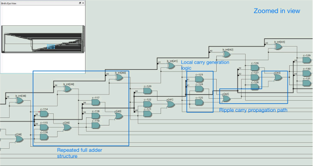
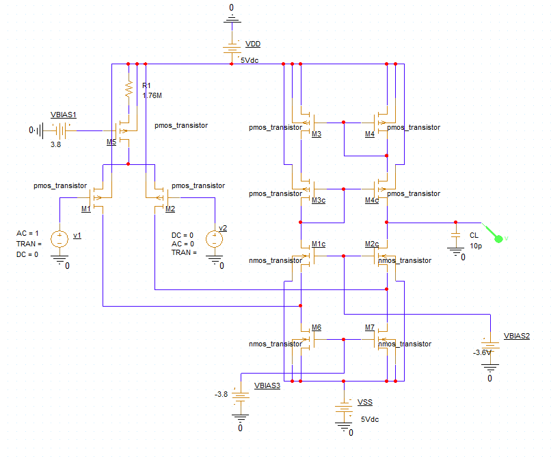
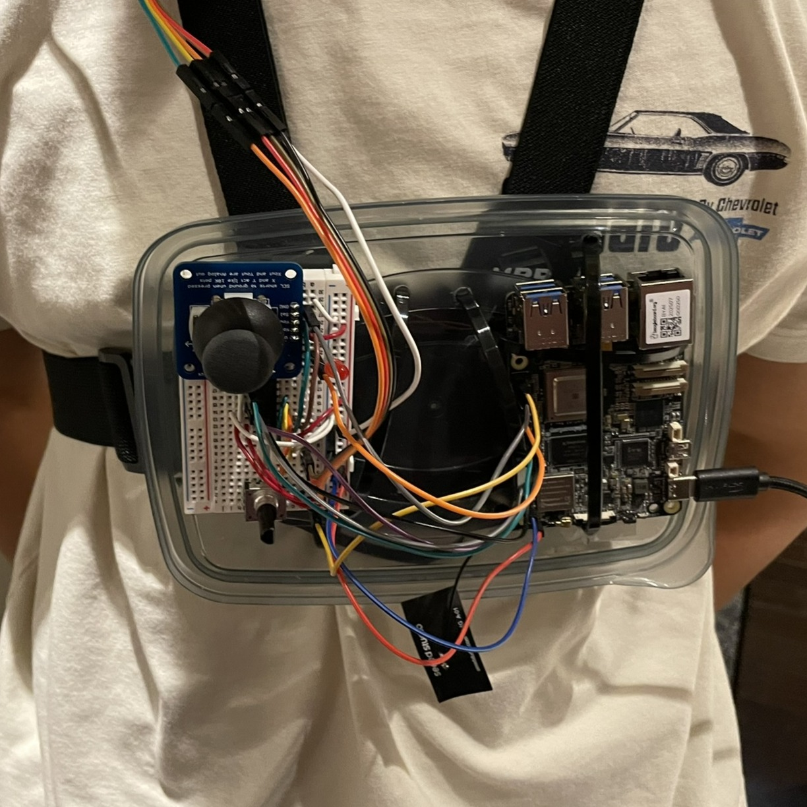
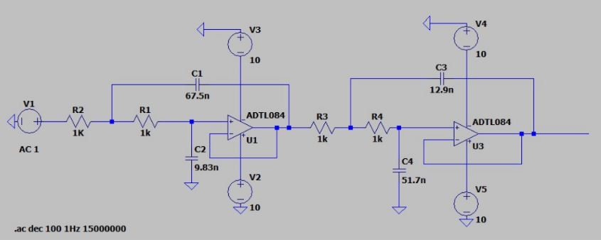
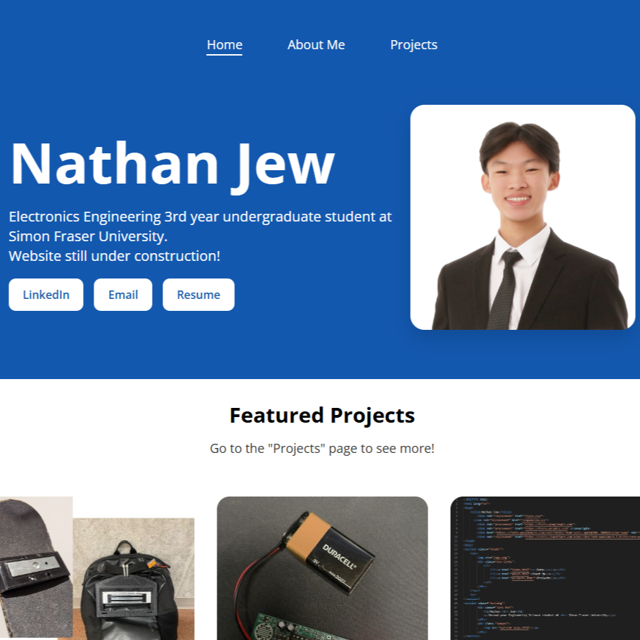

Click the tiles to view the projects and skills

Rubik's Cube Solving Robot
Jun 2026 - Present
Jun 2026 - Present

64-bit RISC-V Execution Unit
Apr - May 2026
Apr - May 2026

Folded-Cascode CMOS Op-Amp Design
Apr - May 2026
Apr - May 2026

Spine-Align: Posture Monitor
Sept - Dec 2025
Sept - Dec 2025

Separation Smart Counter
Aug - Sept 2025
Aug - Sept 2025

Cascaded Notch & Butterworth Filter
Aug 2025
Aug 2025

SolidWorks Object Enhancement
Nov - Dec 2024
Nov - Dec 2024

Personal Website
May - Aug 2024
May - Aug 2024

Magnetic Skateboard Backpack System
Sept - Dec 2023
Sept - Dec 2023

LED PCB-Based Random Number Generator
Nov 2023
Nov 2023
C++
ESP32
Stepper Motors
TMC2209
SolidWorks
KiCad
3D Printing
Rubik's Cube Solving Robot
Personal Project (Jun 2026 - Present)
This project is an automated Rubik's Cube solver that combines mechanical design, embedded
systems,
and electronics. So far, I have designed a custom cube rotation mechanism in SolidWorks and
manufactured the prototype using 3D printing. I also developed embedded C++ firmware on an ESP32
to
control a NEMA 17 stepper motor through a TMC2209 driver, allowing the mechanism to rotate the
cube
with precise angular positioning. This project is still in development, with future work
including
a custom PCB, autonomous cube-solving functionality, and better mechanical design for improved
stability
ESP32
C++
GPIO
Sensors
SolidWorks
3D Printing
Circuit Troubleshooting
Separation Smart Counter
Personal Project (Aug - Sept 2025)
The Separation Smart Counter is a device that sends phone notifications when two components
become separated, with applications in dieting adherence, burglary detection, and medication
tracking. I modeled and 3D-printed a protective shell in SolidWorks, then designed and wired the
circuit using an ESP32 microcontroller. After assembly, I tested and refined the system to
ensure reliable sensor readings, accurate counter updates, and consistent notification delivery.
The image shows the final prototype, with the ESP32 and reed switch. The enclosure is not shown
in
order to see the internals.
SolidWorks
CAD Modelling
Design for Assembly
Motion Studies
Engineering Drawings
Mechanical Design
SolidWorks Object Enhancement
Graphical Communication for Engineering - ENSC 204, SFU (Nov -
Dec
2024)
This project focused on redesigning an existing workbench lamp to improve its functionality and
manufacturability. Using SolidWorks, I applied Design for Assembly principles to reduce assembly
complexity, improve cable management, and enhance portability. I evaluated mechanical
constraints,
iterated component designs, performed a motion study to verify assembly operation, and produced
an
exploded assembly view with detailed part and assembly drawings for manufacturing documentation.
The image shows the final redesigned lamp in SolidWorks.
SolidWorks
3D Printing
Rapid Prototyping
Mechanical Testing
Design Iteration
Team Collaboration
Magnetic Skateboard Backpack System
Engineering, Science and Society - ENSC 100W, SFU (Sept - Dec
2023)
The Magnetic Skateboard Backpack allows users to securely attach their skateboards to a backpack
for hands-free carrying. I designed and modelled magnetic mounting brackets in SolidWorks with a
focus on usability, safety, and portability. Using 3D-printed components, I assembled and tested
multiple prototypes, assessing attachment strength, stability during movement, and overall user
experience. The project was recognized by the course professor as the most unique and innovative
design in the class. The image shows our final prototype of the mounting system on the
skateboard
and backpack.
PCB Assembly
PCB Soldering
Oscilloscopes
Digital Multimeters
Function Generators
DC Power Supplies
Circuit Troubleshooting
LED PCB-Based Random Number Generator
Introduction to Electronics Laboratory - ENSC 120, SFU (Nov
2023)
I soldered and assembled a PCB-based circuit that generates random dice face values from 1 to 6
using 9 LED indicators. Through this, I gained experience with soldering and lab equipment,
including DC power supplies, oscilloscopes, function generators, and digital multimeters. I
completed the project by demonstrating the fully battery-powered system to teaching assistants,
verifying its functionality, reliability, and correct output behavior. The image shows the final
assembled circuit with the LED indicators displaying a dice face value of 5.
© Nathan Jew — Eagles Bluff